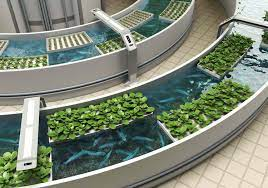
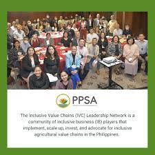

Aquaponics: Promotes the use of aquaponics to grow crops.
Growing Climate-Resilient Rice: Promotes the use of climate reilient rice crop to make farming rice easier at locations with weather that easily change.
Adopting Sloping Agricultural Land Technology: Promotes to use sloping agricultural land technology to make farming more efficient for the farmers.

AGREE Project: The ASEAN Green Recovery Through Equity and Empowerment (AGREE) Project is a research project
funded by the International Development Research Centre (IDRC) and implemented by Grow Asia through its country chapters in the Philippines, Cambodia, and Vietnam.
It aims to contribute a catalogue of what's working, what’s needed, and how to scale women's economic empowerment via low-carbon strategies—a gap identified by Grow Asia on effectively mainstreaming gender across its network..